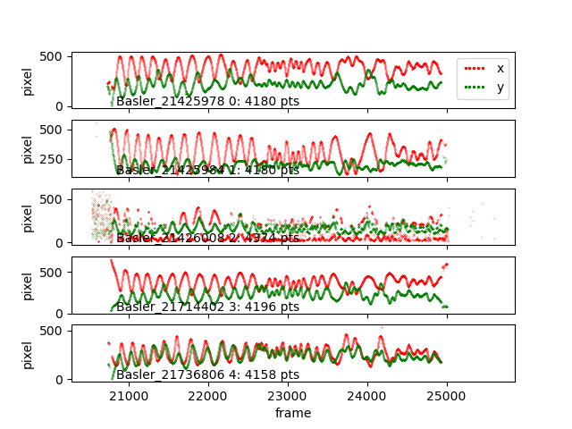
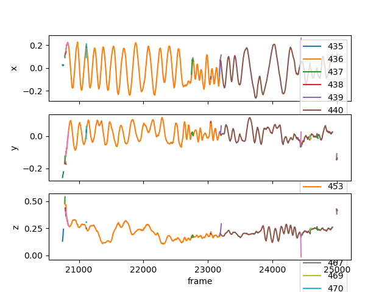
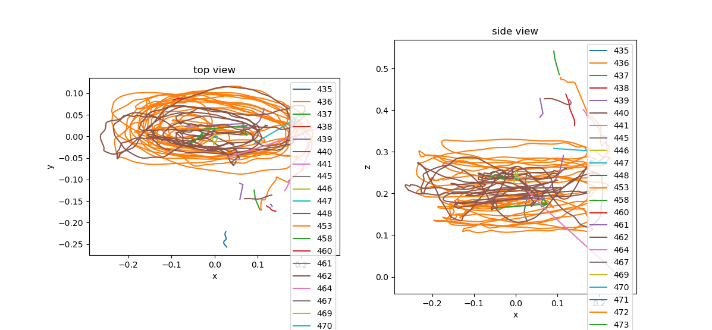
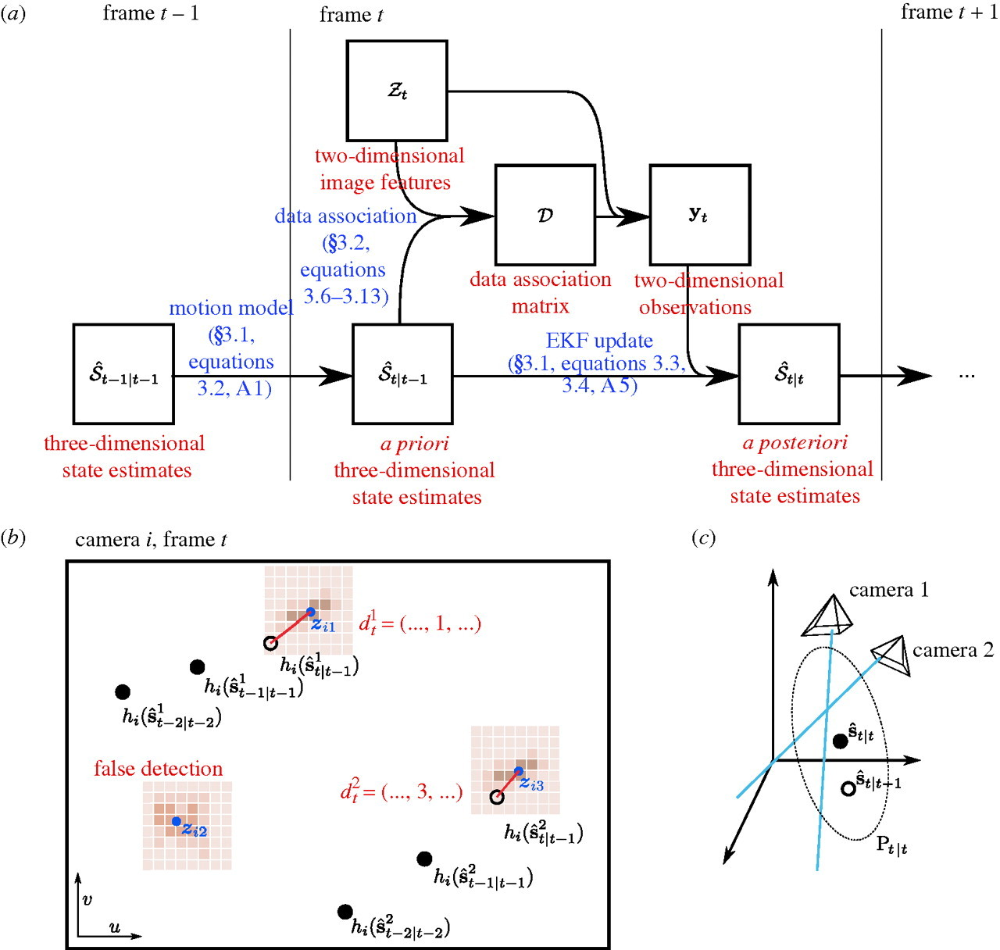
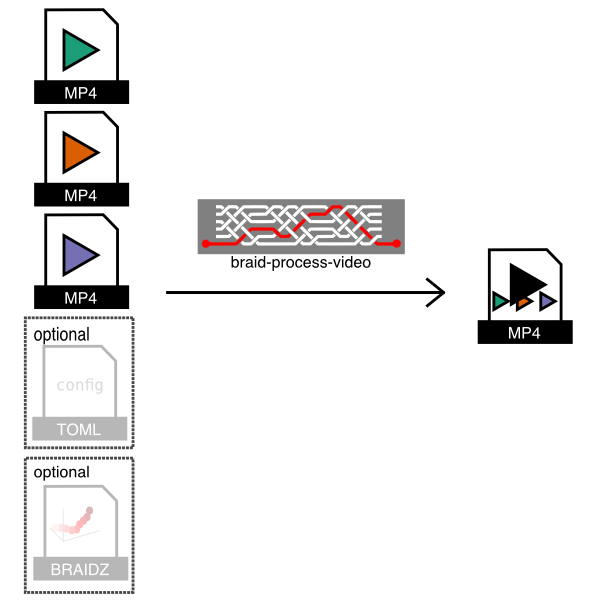

Braid and Strand Camera
This is the User's Guide for Braid and Strand Camera.
What is Strand Camera?
Strand Camera is a single-camera application for live video acquisition, real-time 2D object tracking, and recording. It runs as a local web server and is controlled through a browser-based interface. You can also control it programmatically via Python scripts. Use Strand Camera when you have one camera and need 2D tracking or video recording, or when setting up and calibrating cameras that will later be used with Braid.
What is Braid?
Braid is a multi-camera system for real-time 3D tracking. It coordinates multiple Strand Camera instances — each running on the same machine or on remote machines — synchronizes their cameras using a hardware trigger, and fuses the per-camera 2D detections into 3D trajectories. Use Braid when you need 3D position estimates of one or more moving objects.
Which should I use?
| Goal | Software |
|---|---|
| Record video from a single camera | Strand Camera |
| 2D tracking from a single camera | Strand Camera |
| 3D tracking with two or more cameras | Braid |
| Calibrating cameras for use with Braid | Strand Camera (one camera at a time) |
Both Braid and Strand Camera are free and open source. You can find the source code on GitHub. Issues and feature requests can be posted on the GitHub issue tracker.
Recording video in Strand Camera
Strand Camera can record compressed H.264 video to MP4 files. Recording is started and stopped from the browser UI or via the Python scripting interface.
Post-trigger recording
The Post Triggering section in the Strand Camera UI allows you to record video that includes footage from before the recording command was given — a "time travel" or pre-roll buffer.
To use it:
- In the Post Triggering section, enter a buffer size (number of frames). Strand Camera will continuously keep this many recent frames in memory. A larger buffer means you can go further back in time, but uses more RAM.
- When an event of interest occurs (or has just occurred), click Post Trigger MP4 Recording. Strand Camera starts an MP4 file that begins with the buffered frames, so the recording includes footage from before the trigger.
- Click the stop recording button to end the recording when done.
The buffer size defaults to 0 (disabled). Set it to a non-zero value before the experiment begins.
Viewing live camera images in Braid
The Braid browser UI shows a live preview of each connected camera, including the points detected for tracking. The Cameras section shows a tile for each camera with a live toggle. Switching a tile live streams the camera's images; switching it off shows a grayed-out placeholder instead. Images are streamed only while a tile is live, so leaving tiles off avoids unnecessary load on the camera computers. Clicking a camera's name opens the full Strand Camera UI for that camera.
Getting started
New users should begin with Hardware selection and then Installation. To go straight to 3D tracking, proceed to Configuring and Launching Braid after installation.
About this book
The source code for this documentation is at github.com/strawlab/strand-braid/tree/main/docs/user-docs/users-guide. This book is made with mdBook.
Hardware selection
PC requirements
- Supports recent Ubuntu Linux Long Term Support (LTS) releases (amd64). This is currently our only supported platform.
- Fast CPU. Currently an Intel CPU is recommended due to the use of the Intel Integrated Performance Primitives Library.
- Memory usage is not expected to be particularly high, because processing occurs in realtime.
- Sufficient and fast interfaces to cameras. If your cameras are USB3 or Gigabit ethernet, your computer needs to support enough bandwidth.
- Disk space and speed. For realtime tracking, the tracking data is only modest in size and so no particularly high performance requirements exist. With hardware-accelerated H.264 encoding (see below), compressed video can be saved to MP4 files with only modest CPU and disk requirements. For streaming uncompressed, raw video to disk (with MP4 or the FMF format), very fast disks and lots of disk space are required.
Hardware-accelerated video encoding
H.264 video encoding can be offloaded to hardware, freeing the CPU to continue tracking at full framerate while recording video. Two paths are supported:
NVIDIA NVENC. If an NVIDIA GPU with NVENC support is present, Strand Camera can use it directly via NVIDIA's NVENC library. This requires no additional software beyond the NVIDIA driver. Please see NVIDIA's site for supported hardware.
ffmpeg. Strand Camera can also pipe frames through
ffmpeg for encoding. Any hardware encoder that ffmpeg
supports (including NVIDIA NVENC, Intel Quick Sync, and AMD AMF) can be used
this way, provided the appropriate ffmpeg build and drivers are installed.
Software encoding via ffmpeg (e.g. libx264) is also possible but will use
substantially more CPU.
Camera requirements
Basler cameras using the Pylon API and Allied Vision cameras using the Vimba X API are supported. In addition, consumer webcams (UVC and similar) are supported as a development convenience (see Webcams below).
Basler cameras
Due to the use of the Pylon API, any camera which can be used in the Pylon Viewer can be used in principle. In practice, we regularly test with the following cameras:
- Basler a2A1920-160umPRO
- Basler a2A1920-160umBAS
- Basler acA1300-200um
- Basler acA640-120gm
Allied Vision cameras
Due to the use of the Vimba X API, any camera which can be used in the Vimba Viewer can be used in principle. In practice, we have tested with the following cameras:
- Allied Vision Alvium 1800 U-240m
Webcams
Consumer webcams (UVC and similar) are supported through the webcam camera
backend, which uses the operating system's native capture interface (V4L2 on
Linux, AVFoundation on macOS, and Media Foundation on Windows). This backend is
intended as a development convenience, so that Strand Camera can run without
high-end machine-vision hardware.
Webcams expose almost none of the controls that machine-vision cameras do.
Hardware triggering, exposure time, gain, frame-rate limiting, and the generic
GenICam feature accessors are not available; only device selection, frame
capture, and a choice between RGB8 (default) and Mono8 pixel formats are
supported. Because hardware triggering is unavailable, webcams are not suitable
for synchronized multi-camera 3D tracking with Braid.
Select the webcam backend explicitly (Pylon remains the default):
strand-cam --camera-backend webcam
A specific webcam can be chosen by its human-readable name (as printed at
startup) or by its index. If --camera-name is omitted, the first enumerated
webcam is used:
strand-cam --camera-backend webcam --camera-name "Integrated Camera"
strand-cam --camera-backend webcam --camera-name 0
Installation
Software installation
Download releases from our releases page.
Choose the correct installer for your operating system. We build releases of
Strand Camera and Braid for recent Ubuntu Linux Long Term Support (LTS)
releases. Each Ubuntu release has a version number (e.g. "24.04") and a code
name (e.g. "Noble Numbat"). The installers at the releases page hosted on Github
are available in the "Assets" section with names like:
strand-braid-ubuntu-<UBUNTU_VERSION>-<STRAND_BRAID_VERSION>.zip. Here
UBUNTU_VERSION could be something like 2404 which would correspond to Ubuntu
24.04. Download and expand this .zip file. It contains a README.txt file
with further instructions and a .deb file which can be installed by the Ubuntu
operating system by double-clicking in the file manager.
Selecting or upgrading the Pylon version (Basler cameras)
Strand Camera and Braid talk to Basler cameras through a small shim library
(libpylon-cabi) that is loaded at runtime. The shim is what links against
Basler's proprietary Pylon SDK; the Strand Camera and Braid programs themselves
do not. This means you can change the Pylon version without reinstalling or
rebuilding Strand Camera or Braid — you only swap the shim and the matching
Pylon runtime.
The .deb package bundles a default shim built against Pylon
7.3.0.27189. The versioned shim is installed under /usr/lib/strand-braid/,
with a libpylon-cabi.so symlink in /usr/lib so the dynamic loader finds it
automatically — no environment variable or other configuration is needed. For
most users this is all you need, and you can skip the rest of this section.
Using a different Pylon version
To run against a different Pylon version, you need two matching pieces:
- The Pylon runtime, installed from Basler (for example into
/opt/pylon). Install the Basler.debfor the version you want exactly as described under the Pylon prerequisite above, just with the version of your choice. - A shim built against that same Pylon version. Pre-compiled shims are
published at
https://strawlab.org/assets/libpylon-cabi/precompiled/, with names like
libpylon-cabi-v1-linux-x86_64-pylon_<VERSION>.so. Download the one whose<VERSION>matches the Pylon runtime you installed. (The shim can also be built from source from thepylon-shimloadproject if a pre-built one is not available.)
The shim and the Pylon runtime must be a matched pair. A shim built for Pylon
Xrequires the PylonXruntime to be installed and discoverable at runtime; otherwise loading fails. Always install the two together.
The
v1in the shim filename is the shim ABI generation, not the Pylon version. The Strand Camera / Braid release you have installed expects a specific shim ABI generation (currentlyv1). Use a shim with the matching ABI generation; a mismatch is reported with a clear error at startup.
Once you have downloaded the shim, point PYLON_CABI at it. pylon-shimload
checks PYLON_CABI before falling back to the bundled shim, so your value
always takes precedence. The most direct way is to set it on the command line
for a single run:
PYLON_CABI=/path/to/libpylon-cabi-v1-linux-x86_64-pylon_<VERSION>.so strand-cam --camera-backend pylon
To make the change persistent for your shell, export it from your shell startup
file (for example ~/.bashrc):
export PYLON_CABI=/path/to/libpylon-cabi-v1-linux-x86_64-pylon_<VERSION>.so
PYLON_CABI is read from the process environment, so make sure it is set
wherever the software is launched — including non-interactive contexts such as a
systemd service, a cron job, or sudo without -E.
Installing the Vimba SDK (Allied Vision cameras)
To use Allied Vision cameras (the --camera-backend vimba backend), install
Allied Vision's Vimba X SDK. Download VimbaX_Setup-2024-1-Linux64.tar.gz
from the Allied Vision website
and follow Allied Vision's installation instructions.
Important: Follow the Vimba SDK's own installation steps to the end — in particular, run its GenTL path installer. Extracting the archive alone is not sufficient. After extracting to
/opt, run:sudo /opt/VimbaX_2024-1/cti/Install_GenTL_Path.shThis installs
/etc/profile.d/VimbaX_GenTL_Path_64bit.sh, which sets theGENICAM_GENTL64_PATHenvironment variable so the SDK can find its GenTL transport layers (the.ctifiles under/opt/VimbaX_2024-1/cti/). Then start a new login shell (log out and back in, or open a new terminal) so that variable is in effect.If
GENICAM_GENTL64_PATHdoes not point to the Vimba transport layers, Strand Camera fails to start the Vimba backend with the errorVmbErrorNoTL("no transport layer"), even though the SDK library itself loaded successfully. If you see that error, complete the Vimba installation as above. To set the variable for just one shell without the installer, export it directly:export GENICAM_GENTL64_PATH="/opt/VimbaX_2024-1/cti:$GENICAM_GENTL64_PATH"(The SDK also ships
Set_GenTL_Path.shfor this, but that script must be sourced from within its own directory to work correctly, so the explicitexportabove is more reliable. The installer is the persistent fix.)
Hardware installation
Cameras
Currently Basler cameras are best supported. We use Basler's Pylon library to access the cameras.
Allied Vision cameras using the Vimba X library are supported in Strand Camera and Braid.
Consumer webcams (UVC and similar) are also supported through the webcam
camera backend, intended as a development convenience for running Strand Camera
without machine-vision hardware. Select it with strand-cam --camera-backend webcam. See Webcams for capabilities and
limitations.
Trigger box
Braid uses the Straw Lab Triggerbox hardware to synchronize the cameras. Two hardware variants are supported: one based on an Arduino Nano and one based on a Raspberry Pi Pico.
Note: Cameras that support PTP (Precision Time Protocol, IEEE 1588) can synchronize themselves over the network without any additional hardware, making the Triggerbox unnecessary. However, PTP is not the best choice in every situation, so Triggerbox support remains available.
On Ubuntu, it is important to add your user to the dialout group so that you
can access the Triggerbox. Do so like this:
sudo adduser <username> dialout
Trigger cables
Each camera must be wired to receive the hardware trigger signal from the Triggerbox. The Triggerbox outputs a voltage pulse on each trigger event; this signal must be connected to the appropriate trigger input pin on every camera.
Which pin to use depends on the camera model. Strand Camera hard-codes the trigger input line for each supported camera backend:
- Allied Vision cameras (Vimba X backend):
Line0is used as the trigger source. Consult your camera's datasheet to identify which physical connector pin corresponds toLine0on your specific model. - Basler cameras (Pylon backend): No trigger source line is explicitly
overridden by Strand Camera; the camera's current
TriggerSourcesetting is used. On most Basler cameras this defaults toLine1, which is typically the opto-isolated hardware trigger input on the multi-function I/O connector. Consult your camera's datasheet to confirm the correct pin.
Building the cables. Because camera I/O connectors vary by manufacturer and model (Basler cameras commonly use a Hirose HR10 series connector; Allied Vision cameras vary by model), you will generally need to build or order custom cables. Each cable connects the Triggerbox trigger output to the appropriate trigger input pin on a single camera, along with a common ground reference. Consult the Triggerbox documentation and your camera's datasheet for the required voltage and connector pinouts before building cables.
Braid Configuration and Launching
How to launch Braid
The central runtime of Braid, the braid-run executable, is launched from the
command line like so:
braid run braid-config.toml
The braid-config.toml is the path of a Braid TOML configuration file.
Braid TOML configuration files
The Braid configuration file, in the TOML format, specifies how Braid and multiple Strand Camera instances are launched. Any options not specified result in default values being used. The defaults should be reasonable and secure, allowing minimal configurations describing only specific aspects of a particular setup.
The reference documentation for the BraidConfig type, which is automatically
deserialized from a .toml file:
braid_config_data::BraidConfig.
Here is a minimal configuration for a 3 camera Braid setup:
# Simple example of a Braid configuration TOML file
# The reference documentation for this file is
# https://strawlab.org/strand-braid-api-docs/latest/braid_config_data/struct.BraidConfig.html
# This configuration uses 3 emulated Basler cameras. Set the environment
# variable `PYLON_CAMEMU=3` to configure the Basler Pylon driver to emulate 3
# cameras. In normal usage, you would set your camera names here. There is one
# `[[cameras]]` section for each Strand Camera instance to be launched, and thus
# one such section for each camera.
[[cameras]]
# Each camera `name` is computed from its vendor and serial number.
name = "Basler-0815-0000"
[[cameras]]
name = "Basler-0815-0001"
[[cameras]]
name = "Basler-0815-0002"
Each camera name is computed from its vendor and serial number (for example
Basler-22005677). To discover the names of the connected cameras without
launching a camera, run:
strand-cam --list-cameras
This prints the available cameras (name, model, and serial) for the selected
--camera-backend (Basler Pylon by default) and exits. Use a printed name as
the name of a [[cameras]] entry above, or with strand-cam --camera-name.
Camera synchronization (the [trigger] table)
For 3D tracking, all cameras must expose frames that were acquired at the same
instant so that Braid can combine their 2D detections. How this synchronization
is achieved is configured in the optional [trigger] table. The variant is
selected with the trigger_type key. If the [trigger] table is omitted, Braid
defaults to FakeSync (see below), which is not true synchronization and is
intended only for testing.
The reference documentation is
braid_types::TriggerType.
PtpSync — GigE cameras synchronized over the network with PTP
This is the recommended method for GigE Vision cameras (such as Basler GigE
models) that support the Precision Time Protocol (PTP, IEEE 1588). The cameras
discipline their clocks to a PTP master clock running on the host PC (for
example via ptpd), and Braid programs each
camera to emit frames on a shared periodic schedule.
[trigger]
trigger_type = "PtpSync"
# The frame period in microseconds. 25000 µs = 25 ms = 40 fps.
periodic_signal_period_usec = 25000.0
The camera frame rate is set by periodic_signal_period_usec — it is the
interval between triggers, in microseconds. For example 25000.0 gives 40 fps,
20000.0 gives 50 fps, and 10000.0 gives 100 fps.
Warning: Do not set the period shorter than the camera exposure time (configured in the camera's
.pfs/settings). If the exposure is longer than the trigger period, the camera cannot produce a frame for every trigger, and the effective frame rate will differ from the configured value and cameras may desynchronize. Set the exposure time below the period (e.g. for 40 fps / 25 ms, use an exposure well under 25 ms).
Setting up ptpd and the network (jumbo frames, the correct interface, the host
as PTP master) is an operating-system task performed once; see the
Troubleshooting page if
cameras fail to synchronize.
TriggerboxV1 — hardware trigger over USB
Cameras are triggered by a hardware pulse from a Straw Lab triggerbox. This works with cameras that have an external trigger input (including USB cameras) and provides sub-millisecond timing.
[trigger]
trigger_type = "TriggerboxV1"
device_fname = "/dev/trig1" # serial device of the triggerbox
framerate = 100.0 # frames per second
DeviceTimestamp — rely on camera-provided timestamps
Cameras are synchronized using timestamps reported by the cameras themselves (for example, cameras already disciplined to a common clock by external means).
[trigger]
trigger_type = "DeviceTimestamp"
FakeSync — no real synchronization (testing only)
Braid pretends the cameras are synchronized at a fixed nominal frame rate. This
is useful for development and with emulated cameras, but must not be used for
real 3D tracking, because frames from different cameras are not actually
simultaneous. The Braid GUI displays a warning when FakeSync is in effect.
[trigger]
trigger_type = "FakeSync"
framerate = 95.0
Inspecting the resolved configuration
To see the full configuration that Braid will use — including all default
values filled in for options not present in your .toml file — run:
braid-show-config <config.toml>
This prints the complete resolved configuration to stdout without launching Braid. It is useful for verifying settings before a recording session and for understanding what defaults are in effect.
.braidz files
A .braidz file contains the results of realtime tracking, the tracking
parameters, and so on. By default, Braid saves .braidz files to
~/BRAID-DATA/. Each filename encodes the date and time recording began
(e.g. 20240315_143022.braidz).
Viewer
A viewer for .braidz files is at braidz.strawlab.org.
Visualizing with Rerun
Rerun can display a .braidz file as an interactive 3D
reconstruction alongside the 2D detections from each camera. Use
braidz-export-rrd to produce a Rerun .rrd file, then open it with rerun:
braidz-export-rrd <recording.braidz>
rerun <recording.braidz>.rrd
To specify a different output path, use --output:
braidz-export-rrd <recording.braidz> --output <output.rrd>
rerun <output.rrd>
If you recorded MP4 videos at the same time, pass them as additional positional arguments to embed camera video frames in the viewer:
braidz-export-rrd <recording.braidz> <camera1.mp4> <camera2.mp4> --output <output.rrd>
rerun <output.rrd>
Omitting the video files produces a smaller .rrd much faster.
The Rerun viewer shows the 3D trajectory of each tracked object alongside 2D detections for each camera. Each camera view displays two markers per detected object: the raw 2D detection from Strand Camera and the reprojection of Braid's 3D estimate into that camera's image plane.
Offline retracking
Braid prioritises low latency during live operation: if 2D detections arrive
out of order (e.g. delayed by the network), those late detections are discarded
rather than held for later processing. All detections are still written to the
.braidz file, however, so it is possible to reprocess the data offline and
recover 3D estimates that were missed during live tracking.
Use braid-offline-retrack to retrack a .braidz file with all available
data:
braid-offline-retrack --data-src <input.braidz> --output <retracked.braidz>
The output file uses the same calibration and tracking parameters as the original recording. You can override either or both:
braid-offline-retrack \
--data-src <input.braidz> \
--output <retracked.braidz> \
--tracking-params <params.toml> \
--new-calibration <calibration.xml>
--tracking-params accepts a TOML file containing
TrackingParams
fields. --new-calibration accepts a Braid XML calibration file. Both are
optional and can be combined or used independently.
Retracking commonly improves results in these ways:
- 3D position estimates may be added or adjusted for frames where they were absent in the live recording.
- Trajectories that were assigned separate object IDs (due to brief tracking loss) may be unified into a single object.
- Low-confidence projections near periods of lost tracking may be reduced.
Warning: Object IDs in the output file are renumbered starting from 0, regardless of the IDs in the original recording. Any downstream scripts that reference object IDs from the original
.braidzfile must be updated to use the new IDs.
Note: braid-offline-retrack will not overwrite an existing file, so the
output filename must differ from the input.
Analysis scripts
Scripts to analyze your .braidz files can be found at github.com/strawlab/strand-braid/tree/main/docs/user-docs/analysis.
Latency Analysis
To analyze the latency of your setup with Braid, you can use the Jupyter Notebook braid-latency-analysis.ipynb.
Content analysis
The Jupyter Notebook braidz-contents.ipynb can be used to view the Kalman estimates, the raw 2D detections, data on the association of cameras, and data on associations between 2D detection and 3D Tracking in your .braidz file.
Plotting
The following plots were made with the file
20201112_133722.braidz.
The scripts can be accessed at
github.com/strawlab/strand-braid/tree/main/docs/user-docs/analysis.
A Jupyter Notebook to create all of these plots can be found in braid-plotting.ipynb in the same folder.
braid-analysis-plot-data2d-timeseries.py

braid-analysis-plot-kalman-estimates-timeseries.py

braid-analysis-plot3d.py

File Format
A .braidz file is actually a ZIP file with specific contents. It can be
helpful to know about these specifics when problems arise.
For the on-disk schema versioning policy and history of changes across schema
versions, see
braidz-schema-versioning.md.
Showing the contents of a .braidz file
You can show the filenames inside a .braidz file with
unzip -l FILENAME.braidz.
Extracting a .braidz file
You can extract a .braidz file to its contents with unzip FILENAME.braidz.
Creating a .braidz file
You can create a new .braidz file with:
cd BRAID_DIR
zip ../FILENAME.braidz *
Note, your .braidz file should look like this - with no directories other than
images/.
$ unzip -l 20191125_093257.braidz
Archive: 20191125_093257.braidz
zip-rs
Length Date Time Name
--------- ---------- ----- ----
97 2019-11-25 09:33 README.md
155 2019-11-25 09:33 braid_metadata.yml
0 2019-11-25 09:33 images/
308114 2019-11-25 09:33 images/Basler_22005677.png
233516 2019-11-25 09:33 images/Basler_22139107.png
283260 2019-11-25 09:33 images/Basler_22139109.png
338040 2019-11-25 09:33 images/Basler_22139110.png
78 2019-11-25 09:33 cam_info.csv.gz
2469 2019-11-25 09:33 calibration.xml
397 2019-11-25 09:33 textlog.csv.gz
108136 2019-11-25 09:33 kalman_estimates.csv.gz
192 2019-11-25 09:33 trigger_clock_info.csv.gz
30 2019-11-25 09:33 experiment_info.csv.gz
2966 2019-11-25 09:33 data_association.csv.gz
138783 2019-11-25 09:33 data2d_distorted.csv.gz
--------- -------
1416233 15 files
Note that the following is NOT a valid .braidz file because it has a leading
directory name for each entry.
$ unzip -l 20191119_114103.NOT-A-VALID-BRAIDZ
Archive: 20191119_114103.NOT-A-VALID-BRAIDZ
Length Date Time Name
--------- ---------- ----- ----
0 2019-11-19 11:41 20191119_114103.braid/
97 2019-11-19 11:41 20191119_114103.braid/README.md
155 2019-11-19 11:41 20191119_114103.braid/braid_metadata.yml
0 2019-11-19 11:41 20191119_114103.braid/images/
320906 2019-11-19 11:41 20191119_114103.braid/images/Basler_22005677.png
268847 2019-11-19 11:41 20191119_114103.braid/images/Basler_22139107.png
308281 2019-11-19 11:41 20191119_114103.braid/images/Basler_22139109.png
346232 2019-11-19 11:41 20191119_114103.braid/images/Basler_22139110.png
225153 2019-11-19 11:41 20191119_114103.braid/images/Basler_40019416.png
86 2019-11-19 11:41 20191119_114103.braid/cam_info.csv.gz
2469 2019-11-19 11:41 20191119_114103.braid/calibration.xml
10 2019-11-19 11:41 20191119_114103.braid/textlog.csv.gz
10 2019-11-19 11:41 20191119_114103.braid/kalman_estimates.csv.gz
10 2019-11-19 11:41 20191119_114103.braid/trigger_clock_info.csv.gz
10 2019-11-19 11:41 20191119_114103.braid/experiment_info.csv.gz
10 2019-11-19 11:41 20191119_114103.braid/data_association.csv.gz
20961850 2019-11-19 12:17 20191119_114103.braid/data2d_distorted.csv.gz
--------- -------
22434126 17 files
Contents of a .braidz file
The most important tables in the .braidz file are kalman_estimates, with the
3D tracking results, and data2d_distorted, with the 2D camera detections.
data2d_distorted table
The data2d_distorted table contains the raw (2D) camera detections and is
typically quite large. See the documentation for the row type
Data2dDistortedRow.
This file is important for carrying synchronization data between cameras. For
example, when saving videos, the timing data carried by the
frame
and
block_id
fields is important.
kalman_estimates table
The kalman_estimates tables contains the estimated state (positions and
velocities) of each tracked object in addition to the estimated covariance. See
the documentation for the row type
KalmanEstimatesRow.
data_association table
The data_association table contains which camera detections contributed to
estimating the state of which objects in the kalman_estimates table. See the
documentation for the row type
DataAssocRow.
Chunked iteration of kalman_estimates
The primary tracking results are in the kalman_estimates table. There can
often be many gigabytes of data here, and thus it is useful to iterate over
duration-defined chunks in this file. This way, the entire .braidz file never
needs to be decompressed and the all results do not need to fit in your
computer's memory at once.
This following example uses the pybraidz_chunked_iter Python package. It
iterates over chunks of the file 20201104_174158.braidz, which can be
downloaded here:
import pybraidz_chunked_iter # install with "pip install pybraidz_chunked_iter"
import pandas as pd
# The filename of the braidz file
braidz_fname = "20201104_174158.braidz"
# Open the braidz file and create chunks of 60 second durations.
estimates_chunker = pybraidz_chunked_iter.chunk_on_duration(braidz_fname, 60)
# One could also create chunks with 100 frames of data.
# estimates_chunker = pybraidz_chunked_iter.chunk_on_num_frames(braidz_fname, 100)
# Iterate over each chunk
for chunk in estimates_chunker:
print("Read chunk with %d rows"%(chunk["n_rows"],))
# Create a pandas DataFrame with the data from each chunk
df = pd.DataFrame(data=chunk["data"])
print(df)
3D Tracking in Braid
Principle of operation
This page describes the basic principles of how tracking in 3D is implemented by Braid. A more detailed and more mathematical description can be found in the paper describing Braid's predecessor, Straw et al. (2011). Please refer to this for more details.
Straw et al. 2011: Straw AD, Branson K, Neumann TR, Dickinson MH (2011) Multicamera Realtime 3D Tracking of Multiple Flying Animals. Journal of The Royal Society Interface 8(11), 395-409. doi:10.1098/rsif.2010.0230

.Figure 1: Principles of 3D Tracking in Braid. References in blue refer to parts of Straw et al. (2011). (a) Flowchart of operations. (b) Schematic of a two-dimensional camera view showing the raw images (brown), feature extraction (blue), state estimation (black), and data association (red). (c) Three-dimensional reconstruction using the EKF uses prior state estimates (open circle) and observations (blue lines) to construct a posterior state estimate (filled circle) and covariance ellipsoid (dotted ellipse). This figure and some caption text reproduced from Figure 2 of Straw et al. (2011) under the Creative Commons Attribution License.
(TODO: walkthrough of figure above.)
Tracking in water with cameras out of water
One important aspect of Braid not covered in Straw et al. (2011) is the the capability of tracking fish (or other objects in water) from cameras placed above the water surface.
Refraction
When looking through the air-water interface (or any refractive boundary), objects on the other side appear from a different direction than the direct path to the object due to refraction. Mathematically, refraction is described by Fermat's principle of least time, and this forms the basis of Braid's tracking in water.
Principle of operation for tracking in water
When considering the principle of operation of 3D tracking described above, the primary addition to Braid required for tracking in water is the ability to model the rays coming from the animal to the camera not as straight lines but rather having a bend due to refraction. To implement this, the observation model of the extended Kalman filter is extended to incorporate the air-water boundary so that it consists of both a 3D camera model and air-water surface model. Thus, during the update step of the Kalman filter, this non-linear model is linearized about the expected (a priori) position of the tracked object.
Currently, Braid has a simplification that the model of the air-water boundary is always fixed at z=0. Thus, anything with z<0 is under water and anything with z>0 is above water. This implies that the coordinate frame for tracking with an air-water boundary must have this boundary at z=0 for correct tracking.
How to enable tracking in water.
Practically speaking, tracking using the model of an air-water boundary is
enabled by placing the string <water>1.333</water> the XML camera calibration
file. This will automatically utilize the refractive boundary model described
above with a value for the refractive index of 1.333 for the medium at z<0. As
1.333 is the refractive index of water, it is a model of refraction in water.
Tracking multiple objects in 3D
It is possible to use Braid to track two or more objects in 3D. Typically this
requires the per-camera, 2D object detection to be set to also detect multiple
objects. Thus, the parameter max_num_points in the Object Detection
configuration of Strand Camera should be set to at least the number of objects
that should be tracked.
To maintain object identity over time, such that a single trajectory is recorded for a single animal, Braid uses a simple data association algorithm which assumes independent movement of the tracked objects. This is sufficient in many cases for tracking animals even when they interact strongly with each other, but it is typically be necessary to tune relevant tracking and data association parameters to get the best performance possible.
Details about how data are processed online and saved for later analysis
While running, Braid saves a copy of all incoming feature detections from the cameras as a first step prior to inspecting frame numbers and bundling data from synchronously acquired data from multiple cameras. Combined with issues such as unreliable networks, this has the unfortunate effect that frames saved to disk cannot be guaranteed to be monotonically increasing. For online processing to implement 3D tracking, there is always an idea of "current frame number". Any data from prior frames is immediately discarded from further consideration (but it was saved to disk as described above). If the incoming frame number is larger than the current frame number, any accumulated data for the "current frame" is deemed complete and this is bundled for immediate processing. If the incoming frame number is larger than a single frame from the current frame number, additional frames of empty data are generated so that the stream of bundled data is contiguous (with no gaps) up until the incoming frame number, which then becomes the new "current frame number".
Note that in post-processing based on data saved in .braidz files, a better
reconstruction can be made than possible in the online approach described above
because data which may have been discarded originally could be incorporated into
the tracking process. Furthermore, because latency is no longer a significant
concern, reconstruction for a particular instant need not be performed with only
historical data but can also incorporate information that occurred after that
instant.
Visualizing live tracking with Rerun
Rerun can display the current tracking state in real time as Braid runs. Start the Rerun viewer in one terminal:
rerun
Then, before launching Braid, set the RERUN_VIEWER_URL environment variable
to the address the Rerun viewer is listening on (its default):
export RERUN_VIEWER_URL="rerun+http://127.0.0.1:9876/proxy"
Launch Braid as normal. As objects are tracked, their 3D positions will stream
into the Rerun viewer alongside the calibrated camera positions. This is useful
for monitoring tracking quality during a recording session without needing to
post-process the .braidz file first.
If RERUN_VIEWER_URL is not set, Braid launches normally without any Rerun
integration — no error is produced.
The same Rerun viewer appearance is produced when opening a .braidz file
after recording — see BRAIDZ files and Analysis Scripts
for details.
Setting and optimizing parameters for 3D Tracking
Object Detection
The basis of 3D Tracking is a 2D object detection procedure, usually performed on simultaneously acquired images from at least two cameras.
Object detection is based on background subtraction and feature extraction. In Braid, these parameters are typically set in the .toml config file specified when starting the program. When not explicitly specified, default parameters are used. Within Strand Camera, including when run from within Braid, these parameters can be set in a running instance. The parameters are specified in a camera-specific way, meaning that each camera can have its own parameter values.
In Strand Camera, the option Record CSV file will record the object detection
results in CSV format with a header including the object detection parameters in
use at the start of the recording.
The details on implementation and parameters can be found in the ImPtDetectCfg section of the API.
A more technical account of this procedure can be found in Straw et al. (2011).
How background subtraction works
Object detection operates on luminance (monochrome, 8-bit) images. Images from color cameras are converted first: RGB pixels are converted to luma using the standard BT.601 weights (Y ≈ 0.3 R + 0.59 G + 0.11 B), and raw Bayer-format images are demosaiced to RGB and then converted to luma. Detection is therefore most sensitive to green contrast for color cameras.
The background model maintains, per pixel, a running mean and a running mean
of squared values (from which a per-pixel standard deviation is derived), both
in 32-bit floating point. When Strand Camera starts, the model is initialized
by averaging the first 20 frames; no features are detected during this brief
startup period. This happens whether or not continuous background updating
(do_update_background_model) is enabled. When updating is enabled, the model
is updated every bg_update_interval frames by blending in the current frame
with weight alpha.
A pixel is detected as part of a feature when its difference from the
background mean (with sign according to polarity) exceeds a threshold. With
use_cmp enabled, the threshold is per-pixel and adaptive: n_sigma times
the running standard deviation of that pixel, but never less than
diff_threshold. With use_cmp disabled, the fixed diff_threshold is used
everywhere.
One subtlety when tuning diff_threshold live with use_cmp enabled: the
per-pixel thresholds are stored with the diff_threshold floor already
applied, and lowering diff_threshold cannot restore the values underneath
the old floor. The lower floor takes full effect when the per-pixel thresholds
are next recomputed — at the next background model update, or immediately
after pressing one of the background reset buttons described below. (Raising
diff_threshold takes effect immediately.)
Background model controls in the browser UI
The object detection panel in Strand Camera's browser interface has two buttons affecting the background model:
- Take Current Image As Background — discards the current model and re-initializes it from the next 20 frames, exactly as at startup. Use this after changing the scene or lighting, especially when continuous updating is disabled.
- Set background to mid-gray — sets the background mean to a uniform value of 127 with zero variance.
When running Braid, the Braid browser interface has a "Background Model" section with buttons that act on all connected cameras at once: Take New Background Image, Enable Background Updating, and Disable Background Updating. The per-camera background updating state is shown in the camera list.
Like everything in the browser interface, these buttons can also be triggered programmatically, including on all cameras of a Braid setup at once; see the background reset demos in Scripting with Python.
3D Tracking
3D tracking is based on data association, which links 2D features from individual cameras to a 3D model, and an Extended Kalman Filter, which updates the estimated position and velocity of the 3D model from the 2D features.
The implementation details for the 3D tracking procedures can be found in the TrackingParams section of the API.
Calibration in Braid
What is a calibration?
In our usage here, we refer to a calibration as a model of a camera which allows us to compute the 2D image location of a given 3D point. Braid can use calibrations of multiple cameras to calculate the 3D position of a given point when viewed in 2D camera images.
For a given camera, the calibration is divided into two parts. The "extrinsics", or extrinsic parameters, define the pose of the camera. This is the 3D position and orientation of the camera. The "intrinsics", or intrinsic parameters, define the projection of 3D coordinates relative to the camera to an image point in pixels. In Braid, the camera model is a pinhole model with warping distortion. The intrinsic parameters include focal length, the pixel coordinates of the optical axis, and the radial and tangential parameters of a "plumb bob" distortion model (also called the Brown-Conrady distortion model).
XML calibration files in Braid
The XML calibration files used in Braid are backwards-compatible with those from Braid's predecessor, Flydra. A braid XML calibration file contains multiple individual camera calibrations and potentially and "global" information, such as whether there is an air-water interface for use in the case when cameras are looking down into water.
While the format of the XML file is specific to Braid, the actual camera calibration parameters are conventional and could be obtained via other workflows than that described here. For example, the "traditional" calibration method from flydra uses the MultiCamSelfCal (MCSC) library. There is also the simple Braid AprilTag Calibration Tool tool. There is a tutorial Jupyter notebook for a manual approach involving April Tags.
Step 0: setup cameras (zoom, focus, aperture, gain) and lights
Setup camera position, zoom, focus (using an object in the tracking volume) and aperture (slightly stopped down from wide-open). Exposure times and gains are set in Strand Cam for each camera individually. Note that if you intend to run at 100 frames per second, exposure times must be less than 10 milliseconds. These settings (exposure time and gain) are (unfortunately) currently not saved in any file, and can be set only in the camera settings GUI (in the browser). The camera keeps these values persistently when it is on, but if it has been power cycled, these values will be reset.
Try to obtain a luminance distribution which extends across the entire dynamic range of your sensor (from intensity values 0 to 255) with very little clipping.
Step 1: run "Checkerboard Calibration" to get the camera intrinsic parameters for each camera
(There is a script to draw checkerboards as SVG files:
draw_checkerboard_svg.py.)
In Strand Cam, there is a region called "Checkerboard Calibration" which allows
you to calibrate the camera intrinsic parameters. Show a checkerboard to the
camera. You must enter your the checkerboard parameters into the user interface.
For example, a standard 8x8 checkerboard would have 7x7 corners. Try to show the
checkerboard at different distances and angles. Do not forget to show the
checkerboard corners in the corners of the camera field of view. There is a
field which shows the number of checkerboard collected - this should increase as
the system detects checkerboards. When you have gathered a good set of (say, at
least 10) checkerboards, click the "Perform and Save Calibration" button. The
results of this calibration are saved to the directory
$HOME/.config/strand-cam/camera_info.
As an alternative to running this procedure live with Strand Camera, you may
operate on a directory of PNG images and the strand-cam-offline-checkerboards
program.
Regardless of how you created the YAML file containing the camera intrinsic parameters, the first lines of the YAML file will contain a comment like the following showing the mean reprojection distance.
# Mean reprojection distance: 0.49
The mean reprojection distance is a measure of how well the checkerboard calibration procedure functioned and shows the mean distance between the images of the checkerboard corners in the saved images compared to a (re)projection of the calibration's model of the checkerboard into a synthetic image, and is measured in units of pixels. The theoretical optimal distance is zero. Typically one can expect mean reprojection distances of one or two pixels at most.
Repeat this procedure for all cameras before proceeding to the next step.
Step 2: place April Tags at known 3D locations in the scene
We need to place fiducial markers with known locations in our scene such that each camera sees several of them. Three markers visible per camera is a mathematical bare minimum, but more is better. If multiple cameras can see a single marker, this can be helpful to ensure the calibration of all cameras is internally consistent.
Store the 3D location of the center of each tag in a markers-3d-coords.csv
file like the following:
id,x,y,z
10,0.265,0.758,0.112
15,-0.520,0.773,0.770
20,-0.241,0.509,0.060
22,-0.501,1.025,1.388
This is a CSV file giving the AprilTag ID number and the X, Y and Z coordinates of each marker. The coordinate system must be right-handed and the units of each coordinate are meters.
Step 3: record detections of April Tags from each camera
For each camera, you will record a CSV file of its AprilTag detections. Repeat the following steps for each camera individually before proceeding.
-
Access the camera's Strand Camera instance, either via Braid or by launching Strand Camera directly for that camera.
-
In the Strand Cam GUI, deselect "Object detection → enable object detection" to turn off object detection.
-
Select "April tag detection → enable April tag detection". If tags are visible to the camera, the center of each detected tag will be highlighted with a green circle in the live view tab. Verify that the camera detects at least three April Tags before proceeding. While three is the mathematical minimum, more is better — aim to maximize the number of tags each camera can see.
Note: AprilTag detection is computationally demanding. If you encounter frame-drop errors, try running Strand Camera in a separate instance (not via Braid) or reduce the camera frame rate to around 10 FPS for this step. See the troubleshooting section for more details.
Note: Tags viewed at shallow angles, near the distorted periphery of the field of view, or appearing small in the image may not be detected on every frame, causing the green detection circle to flicker. Such intermittent detections are still suitable for calibration.
-
In the April tag detection tab, click the circular record icon to start recording. This saves a gzip-compressed CSV (
.csv.gz) file in the directory from which Braid was launched. -
Allow recording to run for approximately ten seconds. This ensures that any intermittent detections are captured.
-
Click the square stop-recording button (which replaced the record button) to end recording.
After repeating steps 1–6 for every camera, move all of the .csv.gz files into
a single directory. The path to this directory is used in the next step as the
--apriltags-2d-detections-dir argument to braid-april-cal-cli.
Step 4: Estimate extrinsic parameters and save Braid .xml calibration file
4a: Run braid-april-cal-cli
Run the following command to estimate the extrinsic camera parameters and produce a Braid XML calibration file:
braid-april-cal-cli \
--apriltags-3d-fiducial-coords <3d-coords-file> \
--apriltags-2d-detections-dir <2d-dir> \
--intrinsics-yaml-dir <intrinsics> \
--bundle-adjustment \
--bundle-adjustment-world-points-remain-fixed \
--output-xml <output.xml>
where:
<3d-coords-file>is the path to themarkers-3d-coords.csvfile from Step 2.<2d-dir>is the path to the folder of per-camera detection CSV files from Step 3.<intrinsics>is the path to the folder containing the intrinsic calibration YAML files for each camera from Step 1, normally~/.config/strand-cam/camera_info.<output.xml>is the path where the calibration will be saved; this path must end in.xml.
To also save a Rerun visualization file for use in the next step, add
--rerun-save <rerun_save.rrd> where <rerun_save.rrd> is the output path
(must end in .rrd). This is optional but recommended — it enables the
validation step 4c.
The --bundle-adjustment flag enables an optimization of all calibration
parameters. By default braid-april-cal-cli does not alter camera intrinsic
parameters, and the additional flag
--bundle-adjustment-world-points-remain-fixed prevents bundle adjustment from
moving the AprilTag 3D coordinates. Bundle adjustment is therefore restricted
to the extrinsic (pose) parameters of each camera.
Note: The bundle adjustment options can be altered or removed. Run
braid-april-cal-cli --helpfor a full list of options. We recommend using the restrictions shown above, at least initially.
4b: Validate the calibration summary
The tool prints a calibration summary to the terminal; the same summary also
appears in the first lines of <output.xml>. The summary has two main
sections: Results from SQPnP algorithm using prior intrinsics and Results
after refinement with bundle adjustment model. Inspect the latter section and
verify the following:
-
3d distance between original and updated point locations — every tag ID should show a value of
0.0000. Non-zero values indicate the--bundle-adjustment-world-points-remain-fixedconstraint was not respected. -
3d distance between original and updated camera center locations — adjustments should be small, ideally below 0.05 m.
-
Camera parameters — for each camera the transverse (
t_) and rotation (r_) values in x, y, and z are listed. Verify that these correspond with the known positions and orientations of the cameras in your setup. (The intrinsic parametersfx,fy,cx,cy,k1,k2,k3,p1,p2are also listed but were not adjusted and can be ignored.) -
reprojection distance — a table reports the reprojection distance (in pixels) for each AprilTag visible to each camera. The rightmost column gives the mean per tag across all cameras that see it; the bottom row gives the mean per camera across all tags it sees; and the bottom-right cell gives the overall mean across the whole system. Verify that the overall mean is below 10 pixels, and ideally below 5 pixels.
If any of the above criteria are not met, you must generate a new calibration. Use the reprojection distance table to identify the problematic tags or cameras:
- A tag with high error: remeasure its position or move it so that more cameras
see it, then update
<3d-coords-file>and repeat from Step 3. - A camera with high error: adjust its position, viewing angle, or focus, or repeat its intrinsic calibration (Step 1), then repeat from Step 3.
Note: Acceptable reprojection values depend on the bundle adjustment settings used. The thresholds above apply to the command as written in Step 4a.
4c: Visualize the calibration in Rerun
rerun <rerun_save.rrd>
Rerun displays a 3D reconstruction of the calibration: numbered tags mark the centre of each AprilTag and pyramid shapes show the camera positions. Each camera's field of view is also shown, with detected April Tags labelled. Using the time-series slider at the bottom you can step from the beginning to the end of bundle adjustment. Verify that the arrangement of cameras and tags matches your physical setup.
4d: Configure Braid to use the calibration
Edit the Braid TOML config file (created when you first launched Braid):
-
Find the line starting with
# cal_fname(it is commented out by default). -
Delete the leading
#to uncomment it. -
Replace the placeholder path with the path to the file produced in Step 4a:
cal_fname = "<output.xml>"
Braid will load this calibration the next time it is launched.
Optional: Calibration with water
As described
here, Braid
can track objects in water. To enable this, place the string
<water>1.333</water> in the XML camera calibration file.
Remote Cameras for Braid
What are "remote cameras"?
A remote camera, in the context of Braid, can be used to connect cameras on
separate computers over the network to an instance of Braid. One or more
instances of Strand Camera can thus run on computers other than the computer on
which Braid is running. Cameras can be specified in the Braid configuration
.toml file as being remote and remote cameras can be mixed with non-remote
cameras.
It can also be useful to launch cameras as "remote cameras" even if they run on the same computer. For example, this can help distinguishing the source of messages printed to the terminal.
Network communication overview
The connection between Braid and remote Strand Camera instances is bidirectional:
- Strand Camera → Braid (TCP): Strand Camera connects to the Braid HTTP
server (specified by
--braid-url) to register itself and send updates. - Braid → Strand Camera (TCP): Braid connects back to each Strand Camera's HTTP server to send commands (e.g. frame offsets, recording start/stop).
- Strand Camera → Braid (UDP): Strand Camera sends low-latency 2D feature detection data to the Braid UDP port.
For remote cameras (Strand Camera on a different machine than Braid), all three paths must be reachable across the network.
When Strand Camera starts, it automatically determines which local network interface IP to advertise to Braid for the return TCP connection (path 2 above), based on the network interface that would be used to reach the Braid server IP. This ensures Braid can connect back to Strand Camera even when they are on different machines.
The low-latency UDP path is likewise specified by Braid and returned to Strand Camera upon initial connection.
Relevant aspects of Braid configuration
(Relevant background reading: Braid TOML configuration files.)
If a particular camera is marked by setting start_backend = "remote" in the
[[cameras]] section of the Braid configuration TOML file, braid run does not
attempt to start the camera but rather waits for a network connection from
Strand Camera. Ensure the start_backend field of each relevant camera (in
[[cameras]]) is set to "remote".
Only once all cameras listed in the TOML file have connected will Braid synchronize the cameras and allow recording of data.
You may also want to specifically assign the IP and port of the mainbrain HTTP
server. See the reference documentation for the http_api_server_addr
field.
[mainbrain]
[[cameras]]
name = "Camera-1"
start_backend = "remote"
[[cameras]]
name = "Camera-2"
start_backend = "remote"
Starting a remote camera
When launching Braid with a configuration file as above, the messages printed by Braid will suggest the relevant arguments to use when starting Strand Camera as a remote camera for Braid.
To start Strand Camera as a remote camera for Braid, run strand-cam with the
command line argument --braid-url <URL> specifying the URL for the braid HTTP
address. The camera name should also be specified on the command line using
--camera-name <CAMERA NAME>. Select the camera vendor backend with
--camera-backend pylon (the default) or --camera-backend vimba.
In the following example, the Strand Camera will open the camera named
Camera-12345 and will connect to Braid running at http://192.168.1.10:44444.
strand-cam --camera-backend pylon --camera-name Camera-12345 --braid-url http://192.168.1.10:44444/?token=<TOKEN>
The ?token=<TOKEN> query parameter is required when the Braid server is
listening on a non-loopback address and strand camera has not made a connection
recently. (Strand Camera uses this for an initial connection and then stores a
cookie that lets it reconnect without the token in the future.) Braid prints the
full URL with the token on startup — use that URL directly.
Overriding the Strand Camera HTTP server address
In rare cases (e.g. complex network configurations), Strand Camera's automatic
IP detection may choose the wrong network interface. You can override the
address that Strand Camera advertises to Braid by setting the http_server_addr
field in the relevant [[cameras]] entry in the Braid .toml file:
[[cameras]]
name = "Camera-1"
start_backend = "remote"
# Override the IP that braid uses to connect back to this strand-cam instance.
# Replace 192.168.1.20 with the IP of the remote camera computer.
http_server_addr = "192.168.1.20:0"
The port 0 instructs the operating system to assign a free port automatically.
You may also specify a fixed port number if needed (e.g. for firewall rules).
Running Braid with many cameras (reverse proxy)
When you open the Braid web interface in a browser with many cameras, the live camera previews can stop updating once more than a handful are shown at once. This is a limitation of the browser, not of Braid, and it is easily solved by placing an HTTPS reverse proxy in front of Braid. No changes to Braid or to its configuration logic are required — the proxy is purely a deployment step.
Why the previews stall
Browsers limit how many simultaneous network connections they will open to a single server over HTTP/1.1 — typically 6 connections per origin (host and port). The Braid web interface holds connections open continuously:
- one connection for the main Braid event stream, plus
- one connection for each live camera preview (every preview tile opens its own server-sent events stream through Braid's camera proxy).
So with the main stream plus ~5 live previews you reach the browser's 6-connection limit. Any further previews — and the per-frame requests that pace them — simply queue inside the browser and never run, so those tiles freeze.
This limit applies only to browsers. Remote Strand Camera computers connecting to Braid are not affected and do not need the proxy; they continue to connect directly to Braid as described in Braid: Remote cameras.
The fix: serve the web interface over HTTP/2
HTTP/2 multiplexes many independent streams over a single connection, so the 6-connection limit disappears and all camera previews stream concurrently. Browsers only use HTTP/2 over TLS (HTTPS), so the solution is to run a small reverse proxy that terminates HTTPS and forwards plain HTTP to Braid on the same machine:
browser ──HTTPS / HTTP/2──▶ reverse proxy ──HTTP (localhost)──▶ braid-run
Because the browser now sees a single HTTP/2 connection to the proxy, all of the event streams and preview requests share it. Braid itself keeps speaking ordinary HTTP/1.1 on the loopback interface and is unchanged.
We recommend Caddy because it obtains and renews TLS certificates automatically and streams server-sent events correctly out of the box. The examples below use Caddy; any HTTP/2-capable proxy (nginx, Traefik, …) works too (see the note on buffering at the end).
Step 1: let the proxy reach Braid
Run the proxy on the same computer as braid-run and forward to Braid over
the loopback interface. Braid listens on port 44444 by default. If you want
Braid to accept only proxied browser connections, bind its HTTP server to
loopback by setting the http_api_server_addr
field:
[mainbrain]
http_api_server_addr = "127.0.0.1:44444"
Note: Bind to loopback only if all cameras are local. If you also run remote cameras, those computers must still be able to reach Braid's HTTP server directly, so keep Braid bound to a LAN-reachable address (the default) and simply let the proxy forward to that same address.
Step 2: configure Caddy
Automatic TLS still requires the browser to trust the certificate. On a private network you have two practical options.
Option A — with a domain name (publicly trusted, nothing to install on clients)
If you control a domain name, point a DNS record at the Braid computer's address (a private/LAN IP is fine) and let Caddy obtain a publicly trusted certificate using the DNS-01 challenge, which needs no inbound access to the LAN. This is the smoothest option: every browser trusts the certificate with no per-machine setup.
braid.lab.example.com {
reverse_proxy 127.0.0.1:44444
tls {
dns <your-dns-provider> {env.DNS_API_TOKEN}
}
}
DNS-01 requires a build of Caddy that includes your DNS provider's module (see
the Caddy DNS-challenge
documentation; build
with xcaddy) and an API token for that
provider supplied via the DNS_API_TOKEN environment variable.
Option B — fully offline (Caddy's internal CA, one-time trust install)
With no domain or no internet access, let Caddy act as its own certificate authority. Caddy issues and renews certificates automatically; you install Caddy's root certificate on each computer that will open the web interface once.
braid.local {
reverse_proxy 127.0.0.1:44444
tls internal
}
Install Caddy's root certificate into the system trust store:
caddy trust
On other computers, copy Caddy's root certificate (printed by caddy trust,
typically under Caddy's data directory at
pki/authorities/local/root.crt) and add it to that machine's (or browser's)
trust store. On a managed set of lab computers this can be pushed out
automatically. Make sure braid.local resolves to the Braid computer on each
client (via DNS, an /etc/hosts entry, or mDNS).
Step 3: open the web interface through the proxy
Browse to the proxy's HTTPS address (e.g. https://braid.lab.example.com/)
instead of http://<braid-host>:44444/. Braid's access token works exactly as
before: append ?token=<TOKEN> (Braid prints the full URL with the token on
startup) on first connection; the browser then stores a cookie and reconnects
without it. Do not disable Braid's token authentication — the proxy only
changes the transport, not the security model.
Scaling notes and caveats
- The ceiling moves from ~6 to ~100–250. HTTP/2 multiplexes streams but still caps the number of concurrent streams per connection (Caddy allows a few hundred by default). Each live preview uses one stream, so this is far above any realistic camera count. If you ever approach it, raise the proxy's maximum-concurrent-streams setting — it is a single configuration knob.
- The proxy → Braid hop stays HTTP/1.1, and that is fine. It is a server-to-server connection on the same machine and is not subject to the browser's per-origin limit.
- If you use nginx instead of Caddy, disable response buffering for the
event streams or previews will be delayed indefinitely: set
proxy_buffering off;,proxy_http_version 1.1;, and forward to Braid over HTTP/1.1. Caddy needs none of this. - Remote cameras do not use the proxy, and should not. The connection limit is a browser-only concern — Strand Camera is a native client and is not subject to it — so remote cameras keep connecting directly to Braid. There is also nothing to gain: the high-rate tracking data travels camera→Braid over UDP, which an HTTP proxy cannot carry, and the only HTTP traffic between them is light control messages. Routing cameras through the proxy would add a TLS certificate-trust and configuration burden on every camera computer for no real benefit. The proxy and the cameras simply use independent paths to Braid.
Remote access with Tailscale
The Braid and Strand Camera web interfaces are normally reached over the local
network — you open http://<braid-host>:44444/ from a computer on the same LAN.
That works well in the lab, but it breaks down the moment the device you want to
use is somewhere else: a laptop at home, a phone on cellular data, or a
collaborator on another campus. The instrument is usually behind a NAT router or
an institutional firewall with no inbound access, so there is no address the
remote device can simply browse to.
Tailscale solves this without any port forwarding, public IP address, or firewall changes. It puts the Braid computer and your remote devices onto the same private, encrypted network, so the remote device can reach Braid by a stable address exactly as if it were on the same LAN. No changes to Braid's security model are required — and you can optionally let Braid recognize Tailscale connections so no access token is needed at all.
When Tailscale helps
Use Tailscale when the device and the instrument are on different networks:
- a laptop or phone away from the lab (home, conference, cellular),
- a remote collaborator who needs to view or control an experiment,
- any case where the Braid computer is behind NAT/firewall with no inbound access.
You do not need Tailscale when the browser is already on the same LAN as
Braid — just use the normal http://<braid-host>:44444/ URL. Tailscale is also a
separate concern from the reverse-proxy guide,
which addresses a different problem (browser connection limits with many camera
previews). The two compose nicely, and the HTTPS option below
solves both at once.
Note: Tailscale is for reaching Braid from a device you control and can install software on. It is not a way to hand anonymous, zero-install access to a random phone — that device must join your tailnet first. For one-off local access, the printed token URL / QR code remains the right tool.
How it works (briefly)
Tailscale builds an encrypted WireGuard mesh
between your devices (your tailnet). Each device gets a stable address in the
100.64.0.0/10 range and a name via MagicDNS (for example
braid-host.your-tailnet.ts.net). Connections are made directly device-to-device
when possible and fall back to Tailscale's relays when NAT makes a direct path
impossible — either way the traffic is end-to-end encrypted and authenticated, so
the connection itself is already secure before Braid sees it.
Step 1 — install Tailscale on both ends
Install and sign in to Tailscale on:
- the Braid computer (see the Tailscale download page), and
- each remote device — desktop clients for Windows/macOS/Linux, or the Tailscale app from the iOS App Store / Google Play for a phone or tablet.
Sign every device into the same tailnet (the same Tailscale account or organization). Self-hosters who cannot use Tailscale's coordination service can run Headscale instead; the Braid side is identical.
Step 2 — find the Braid computer's Tailscale address
On the Braid computer:
tailscale ip -4 # prints the 100.x.y.z address
tailscale status # also shows the MagicDNS name
Use either the 100.x.y.z address or the MagicDNS name
(braid-host.your-tailnet.ts.net) from the remote device.
Step 3 — choose how to expose Braid
There are two good options. Option A is the simplest; Option B adds HTTPS (and, as a bonus, fixes the many-camera preview limit).
Option A — direct over the tailnet (token-free)
Leave Braid listening on a LAN-reachable address (the default) so the tailnet
interface can reach it, and tell Braid to trust connections coming from the
Tailscale range. Because Tailscale has already authenticated and encrypted the
peer, an additional access token is redundant — set
trusted_networks
in your Braid config:
[mainbrain]
# Accept clients arriving over Tailscale without an access token.
# 100.64.0.0/10 is Tailscale's address range (use your WireGuard subnet instead
# if you run plain WireGuard).
trusted_networks = ["100.64.0.0/10"]
From the remote device, browse to http://braid-host.your-tailnet.ts.net:44444/
(or the 100.x.y.z address). No token is needed — Braid recognizes the
Tailscale peer and issues the session directly.
Security note:
trusted_networksmatches the immediate peer address of the connection. This is correct when the browser connects directly to Braid over Tailscale. Do not add100.64.0.0/10here if Braid sits behind a reverse proxy, because then every request appears to come from the proxy and the check no longer identifies the real client. Strand Camera supports the same setting via the--trusted-networkcommand-line flag.
If you would rather keep token authentication even over Tailscale, simply omit
trusted_networks: the usual ?token=<TOKEN> flow (Braid prints the full URL on
startup) works unchanged over the tailnet.
Option B — HTTPS with tailscale serve (also fixes many-camera previews)
Tailscale can terminate HTTPS for you using a certificate it manages automatically (no certificate files to install on clients), and serve Braid at its MagicDNS name. This also upgrades the browser connection to HTTP/2, which removes the ~6-connection limit that stalls previews when many cameras are shown at once — so a single step gives you both remote access and preview scaling.
First enable HTTPS / MagicDNS for your tailnet in the Tailscale admin console (DNS → Enable MagicDNS, and Enable HTTPS). Then bind Braid to loopback so that only the local Tailscale proxy can reach it:
[mainbrain]
http_api_server_addr = "127.0.0.1:44444"
Note: Bind to loopback only if all cameras are local. If you also run remote cameras, keep Braid on a LAN-reachable address so those camera computers can still connect, and point
tailscale serveat that same address.
Then publish it over HTTPS:
tailscale serve --bg http://127.0.0.1:44444
Braid is now reachable at https://braid-host.your-tailnet.ts.net/ from any
device on your tailnet. (The exact tailscale serve syntax has changed across
Tailscale versions; see the tailscale serve
documentation and
tailscale serve --help.)
In this mode you do not set trusted_networks: the Tailscale proxy reaches
Braid over the loopback interface, and Braid already treats loopback connections
as trusted (no token required). The security boundary is your tailnet — only
devices you have added, subject to your ACLs,
can reach the served endpoint.
Note: Treating loopback as trusted means any local user on the Braid computer can also reach the interface. On a single-user instrument machine this is fine; on a shared multi-user host, prefer Option A (keep the token, or trust only the Tailscale range).
Restricting who can reach Braid
By default every device in your tailnet can reach every other. To limit which people or devices may open the Braid interface, use Tailscale ACLs — for example, tag the Braid computer and grant access only to a specific group:
{
"tagOwners": { "tag:braid": ["group:lab-admins"] },
"acls": [
{ "action": "accept", "src": ["group:lab-members"], "dst": ["tag:braid:44444,443"] }
]
}
This keeps the instrument private to your team even though it is reachable from anywhere.
Caveats
- Every device must run Tailscale and be signed into your tailnet. This is ideal for lab members and named collaborators, but not for handing a stranger ad-hoc access — for that, the local token URL / QR code is still the tool.
- Tailscale's relays may be used when a direct path is impossible (e.g. both ends behind strict NAT). Throughput over a relay is lower than a direct connection; this matters only for live video previews, not for control or for the tracking data (which travels camera→Braid over the LAN and never leaves it).
tailscale funnelis different fromtailscale serve. Funnel exposes a service to the public internet; for private remote access to an instrument you wantserve(tailnet-only), not Funnel.- Remote cameras do not need Tailscale to talk to Braid if they are on the same LAN. Tailscale is about reaching the web interface from afar; the camera↔Braid data path is unchanged (see Braid: Remote cameras).
Scripting with Python
Everything in Strand Camera and Braid that can be controlled from the web
browser can also be controlled from a Python script. The general technique is to
connect to a running Strand Camera (or Braid) process over HTTP, exactly as a
browser does. All scripts below require the
requests library:
pip install requests
Demo: recording a video using Strand Camera from a Python script
record-mp4-video.py
connects to a running Strand Camera instance, sends a command to start MP4
recording, waits five seconds, then sends a command to stop. Run it like so:
python record-mp4-video.py --strand-cam-url http://127.0.0.1:3440/
The --strand-cam-url argument defaults to http://127.0.0.1:3440/ and should
be changed to match the URL shown in your Strand Camera window. Modify the
time.sleep(5.0) call to change the recording duration, or replace the fixed
sleep with your own experimental logic between the start and stop commands.
Demo: recording a color video with the ffmpeg codec
record-mp4-video-ffmpeg.py
records an MP4 using the Ffmpeg codec, which pipes frames to the system
ffmpeg binary. Unlike the built-in H.264 encoders, the
ffmpeg codec accepts color input, so this is the path to use for color
recordings — for example on GPUs where the built-in NVENC encoder is
unavailable. Start Strand Camera with a color pixel format:
strand-cam --camera-name my-camera --pixel-format RGB8
and then run:
python record-mp4-video-ffmpeg.py --strand-cam-url http://127.0.0.1:3440/ --codec libx264
The --codec argument selects the ffmpeg encoder (default libx264; other
common choices are h264_nvenc and h264_vaapi) and must be available in your
ffmpeg build. Pass --verify-dir with the directory Strand Camera writes to
(its --data-dir) to have the script confirm that a non-empty .mp4 was
produced; this is how the script is exercised as an automated end-to-end test in
the project's continuous integration, so it stays in sync with the software.
Demo: recording multiple videos using Braid from a Python script
record-mp4-video-braid-all-cams.py
connects to a running Braid instance and sends a single command that starts MP4
recording on all connected cameras simultaneously, waits five seconds, then
stops. Run it like so:
python record-mp4-video-braid-all-cams.py --braid-url http://127.0.0.1:8397/
The --braid-url argument defaults to http://127.0.0.1:8397/. As with the
single-camera script, replace the fixed sleep with your own trigger logic to
control exactly when recording starts and stops.
Demo: save preview images to disk from Strand Camera using Python
strand_cam_subscriber.py
subscribes to the live image stream from Strand Camera and saves each frame as
a JPEG file (image0000.jpg, image0001.jpg, …). Run it like so:
python strand_cam_subscriber.py --strand-cam-url http://127.0.0.1:3440/
Each frame is acknowledged back to Strand Camera after it is saved, which acts as flow control — Strand Camera will not send the next frame until the acknowledgment is received. This makes the script suitable as a starting point for per-frame image processing in Python.
Demo: listen to realtime 3D tracking data using Python
braid_retransmit_udp.py
subscribes to the live event stream from Braid and re-transmits the 3D position
of each tracked object as a UDP packet containing comma-separated x, y, z
values. Run it like so:
python braid_retransmit_udp.py --braid-url http://127.0.0.1:8397/ \
--udp-host 127.0.0.1 --udp-port 1234
The event stream carries three types of messages: Birth (a new object is
first detected), Update (position estimate for a tracked object), and Death
(an object is no longer tracked). The script forwards only Update events. You
can extend it to handle Birth and Death events for applications that need
to track object identity over time.
Demo: resetting the object detection background model using Python
reset-background.py
presses the background model buttons of the object detection
UI programmatically. By
default it acts like the Take Current Image As Background button,
re-initializing the background model from the next ~20 incoming frames:
python reset-background.py --strand-cam-url http://127.0.0.1:3440/
With --clear-to-value, it instead acts like the Set background to
mid-gray button, setting the background model to a uniform gray value:
python reset-background.py --strand-cam-url http://127.0.0.1:3440/ --clear-to-value 127
The underlying HTTP calls are simple: a POST to the /callback endpoint with
the JSON body "TakeCurrentImageAsBackground" or {"ClearBackground": 127.0}.
Demo: resetting the background model on all cameras of a Braid setup
reset-background-braid-all-cams.py
performs the same background reset on every camera connected to a running
Braid instance. Run it like so:
python reset-background-braid-all-cams.py --braid-url http://127.0.0.1:8397/
Unlike MP4 recording, there is no single Braid command for this. Instead, the
script asks Braid for the HTTP address of every connected camera (this is
carried in the connected_cameras field of the Braid event stream) and then
sends the command to each Strand Camera directly. The same pattern can be used
to automate any other per-camera action across a whole Braid setup.
Advanced: automating manual actions
Any action available in the browser UI can be scripted. To discover the
corresponding HTTP call, open your browser's developer tools (F12 in most
browsers), go to the Network tab, and perform the action manually. You will
see the POST request sent to the /callback endpoint and the JSON body it
carries. You can then replicate that call in Python using the StrandCamProxy
or BraidProxy pattern shown in the demo scripts above.
Offline retracking of .braidz files
While Braid runs, it produces 3D position estimates (the Kalman estimates) at
low latency. To keep latency low, the online tracker never waits for late or
out-of-order data: any 2D detection that arrives after Braid has already moved on
to a later frame is discarded from the online 3D reconstruction. However, every
2D detection is still saved to the .braidz file as it arrives.
Retracking re-runs the tracker offline over a recorded .braidz file, using
all of the saved 2D detections for each frame. Because latency is no longer a
concern, the offline reconstruction can incorporate data the online tracker had
to drop, and can also use information from frames acquired after a given
instant. See 3D Tracking in Braid
for the underlying rationale.
Retracking is performed by the braid-offline-retrack program.
Retrack with the original parameters and calibration
To recompute the 3D trajectories using the same calibration and tracking parameters that were used during the live recording:
braid-offline-retrack --data-src <input.braidz> --output <output.braidz>
--data-src/-dis the input.braidzfile to retrack.--output/-ois the output file; its name must end in.braidz.
braid-offline-retrack will not overwrite an existing file, so --output
must be a new path (and must differ from --data-src).
Typical improvements after retracking include:
- 3D estimates added or adjusted for frames where they were missing or noisy online.
- Trajectory fragments of the same object that were given different object IDs online may be unified into a single object.
- Spurious low-confidence estimates near the end of a track may be removed.
- Object IDs in the output are renumbered starting from 0.
Retrack with different tracking parameters or a different calibration
You can also retrack with alternative tracking parameters and/or a different (for example, higher-quality) calibration:
braid-offline-retrack \
--data-src <input.braidz> \
--output <output.braidz> \
--tracking-params <tracking-params.toml> \
--new-calibration <new-calibration.xml>
--tracking-paramsis a TOML file of tracking parameters. See Parameters for Object Detection and Tracking andbraid_types::TrackingParams.--new-calibrationis a calibration file produced as described in Calibration in Braid.
Both options are independent; you may supply either, both, or neither. Supplying neither is equivalent to the first command above.
Other options (--fps, --start-frame, --stop-frame) are available; run
braid-offline-retrack --help for the full list.
Visualizing the result
The output .braidz file can be inspected with the same tools as any other
.braidz file — see BRAIDZ files and Analysis
Scripts — including opening it in the
Braidz viewer or visualizing it in
Rerun.
Processing recorded videos using Braid
Overview
The braid-process-video program will takes video files and process them to
produce various outputs.

As shown in the figure, this program takes .mp4 (or .fmf) video input files
saved by Braid and a configuration file and then creates an output .mp4 video
which stitches the input videos together. Optionally, it can also plot 2D
detections from a .braidz file on top of the raw video.
Note
- The input videos must be saved by Braid to ensure that the timestamps for each frame in the file are correctly stored.
Example usage 1: Automatic determination of inputs
If a directory contains a single .braidz file and one or more video files,
braid-process-video can automatically generate a video with default options.
In this case run it like so:
braid-process-video auto-config --input-dir /path/to/video-and-braidz-files
Example usage 2: Use of a .toml configuration file
Here is an example configuration file braid-bundle-videos.toml:
# The .braidz file with 2D detection data (optional).
input_braidz = "20211011_163203.braidz"
# This stanza specified that an output video will be made.
[[output]]
type = 'video'
filename = 'composite.mp4'
# The following sections specify video sources to use as input.
[[input_video]]
filename = 'movie20211011_163224.mp4'
[[input_video]]
filename = 'movie20211011_163228.mp4'
With such a configuration file, run the program like so:
braid-process-video config-toml --config-toml braid-bundle-videos.toml
TODO
There are many more options which can be configured in the .toml configuration
file and they should be documented.
FMF (Fly Movie Format) - simple, uncompressed movie storage format
New users are recommended to use MP4 files for video rather than FMF files. Strand Camera supports saving to MP4 files, using several different potential encoders.
The primary design goals of FMF files are:
- Single pass, low CPU overhead writing of lossless movies for realtime streaming applications
- Precise timestamping for correlation with other activities
- Simple format that can be written and read from a variety of languages.
These goals are achieved via using a very simple format. After an initial header containing meta-data such as image size and color coding scheme (e.g. monochromatic 8 bits per pixel, YUV422, etc.), repeated chunks of raw image data and timestamp are saved. Because the raw image data from the native camera driver is saved, no additional processing is performed. Thus, streaming of movies from camera to disk will keep the CPU free for other tasks, but it will require a lot of disk space. Furthermore, the disk bandwidth required is equivalent to the camera bandwidth (unless you save only a region of the images, or if you only save a fraction of the incoming frames).
The FMF file type defines raw image sequences where each image is stored exactly in the raw data bytes as they were acquired from the camera together with with a timestamp. There are two versions implemented, versions 1 and 3 (Version 2 was briefly used internally and is now best forgotten). Version 1 is deprecated and new movies should not be written in this format.
A Rust implementation to read and write .fmf files can be found in the
github.com/strawlab/strand-braid
repository.
Documentation for the file type and reading/writing .fmf files in Python
can be found at the documentation of
motmot.FlyMovieFormat.
A MATLAB® implementation can be found in the
github.com/motmot/flymovieformat
repository.
An R implementation can be found in the github.com/jefferis/fmfio
repository.
Converting movies to and from FMF format with the fmf command line program
The fmf command line program from
https://github.com/strawlab/strand-braid/tree/main/media-utils/fmf/fmf-cli
can be used for a variety of tasks with .fmf files, especially converting to
and from other formats.
Here is the output fmf --help:
strawlab@flycube10:~$
fmf 0.1.0
work with .fmf (fly movie format) files
USAGE:
fmf <SUBCOMMAND>
FLAGS:
-h, --help Prints help information
-V, --version Prints version information
SUBCOMMANDS:
export-fmf export an fmf file
export-jpeg export a sequence of jpeg images
export-mp4 export to mp4
export-png export a sequence of png images
export-y4m export to y4m (YUV4MPEG2) format
help Prints this message or the help of the given subcommand(s)
import-images import a sequence of images, converting it to an FMF file
info print information about an fmf file
See https://github.com/strawlab/strand-braid/tree/main/fmf/fmf-cli for more information.
File Structure
| FMF File structure |
|---|
| Header |
| Frame chunk 0 |
| Frame chunk 1 |
| Frame chunk 2 |
| ... |
| Frame chunk N |
The chunk size is specified in the header and is equal to the raw frame pixel
data size plus 8 bytes for the timestamp. Thus a 640 pixel wide, 480 pixel high
MONO8 format image would have a chunksize of 307208 (equal to 640 * 480 + 8).
Because the chunk size is constant for all frames, any chunk can be accessed by computing its position and seeking to that location. For the same reason, the image data within FMF files can be memory mapped.
Header Version 3
This is the preferred header for all new FMF files.
| Start position | Type | Name | Description |
|---|---|---|---|
| 0 | u32 | version | Version number (3) |
| 4 | u32 | lenformat | Length of the subsequent format string |
| 8 | [u8; N] | format | ASCII string of N characters containing pixel format, e.g. MONO8 or YUV422 |
| 8+N | u32 | bpp | Bits per pixel, e.g. 8 |
| 12+N | u32 | height | Number of rows of image data |
| 16+N | u32 | width | Number of columns of image data |
| 20+N | u64 | chunksize | Bytes per "chunk" (timestamp + frame) |
| 28+N | u64 | n_frames | Number of frame chunks (0=unknown, read file to find out) |
For the format field, the following pixel formats are known:
| Format string | Description |
|---|---|
MONO8 | Monochrome data, 8 bits per pixel |
RAW8:RGGB | Raw Bayer mosaic data, RGGB pattern, 8 bits per pixel |
RAW8:GBRG | Raw Bayer mosaic data, GBRG pattern, 8 bits per pixel |
RAW8:GRBG | Raw Bayer mosaic data, GRBG pattern, 8 bits per pixel |
RAW8:BGGR | Raw Bayer mosaic data, BGGR pattern, 8 bits per pixel |
YUV422 | Packed YUV encoded data, 16 bits per pixel |
RGB8 | Packed RGB encoded data, 24 bits per pixel |
This list of pixel formats is not exhaustive and other formats can be added.
Header Version 1
⚠ This version is deprecated and no new files with this format should be written. ⚠
Only supports MONO8 pixel format.
| Start position | Type | Name | Description |
|---|---|---|---|
| 0 | u32 | version | Version number (1) |
| 4 | u32 | height | Number of rows of image data |
| 8 | u32 | width | Number of columns of image data |
| 12 | u64 | chunksize | Bytes per "chunk" (timestamp + frame) |
| 20 | u64 | n_frames | Number of frames (0=unknown, read file to find out) |
Frame Chunks
Frame chunks have an identical format in FMF v1 and v3 files. From a given
camera pixel format and size, they are constant in size and thus the Nth frame
can be accessed by seeking to frame0_offset + n*chunksize. The image data is
uncompressed raw image data as read directly from the camera.
| Start position within chunk | Type | Name | Description |
|---|---|---|---|
| 0 | f64 | timestamp | Timestamp (seconds in current epoch) |
| 8 | [u8; N] | image_data | Image data |
Types used above
All numbers are little-endian (Intel standard).
| Type | size (in bytes) | description |
|---|---|---|
| [u8; N] | N | variable length buffer of characters |
| u32 | 4 | unsigned 32 bit integer |
| u64 | 8 | unsigned 64 bit integer |
| f64 | 8 | 64 bit floating point number |
Troubleshooting
Synchronization problems
Braid uses the Straw Lab Triggerbox to send a hardware trigger signal to all cameras simultaneously. If cameras are not synchronized, check the following:
Permission to access the Triggerbox serial port. On Ubuntu, the Triggerbox
appears as a serial device (e.g. /dev/ttyUSB0). Your user must be in the
dialout group to access it:
sudo adduser <username> dialout
After adding yourself to the group, log out and back in for the change to take
effect. You can verify group membership with the groups command.
Triggerbox connected and detected. Confirm the Triggerbox is plugged in and
that the device file appears under /dev/ttyUSB* or /dev/ttyACM*. The Braid
log output at startup will indicate whether the Triggerbox was found.
Trigger cables. Each camera must be connected to the Triggerbox with a trigger cable. Verify that every cable is seated properly at both ends.
Frame rate consistency. Ensure that every camera is configured to the same frame rate. Mismatched frame rates will cause synchronization failures even when the hardware trigger is working correctly.
PTP synchronization problems
When using GigE cameras synchronized over a network via PTP (Precision Time Protocol), synchronization failures typically appear in the Braid log as repeated warnings such as:
launch time precedes device timestamp. Is time running backwards?
or as Braid reporting that cameras are not synchronizing.
PTP daemon not running or misconfigured. The PTP daemon (e.g. ptpd) must
be running with the host PC set as the PTP master clock. Check its status with:
systemctl status ptpd
A healthy output will include a Started ptpd.service log entry. If not, check
that the daemon is configured correctly (the ptpengine:preset=masteronly and
correct ptpengine:interface settings) and restart it:
systemctl restart ptpd
Wrong network interface. The PTP daemon must be bound to the same network
interface that the cameras are connected to. Use ip link | grep "state UP" to
identify the correct interface name and confirm it matches the
ptpengine:interface setting in your PTP configuration file.
Jumbo frames not enabled. GigE cameras typically require jumbo frames (MTU 9000) on both the PC network interface and the switch. Verify the MTU is set to 9000 on the PC's network connection and that jumbo frames are enabled in the switch settings.
Camera clocks drifting on first launch. On the first launch after cameras have been powered on it can take several seconds for PTP to bring all camera clocks into agreement. The "Is time running backwards?" warning will stop appearing once synchronization is established. If it persists for more than 30 seconds, check the items above.
AprilTag detection drops frames during calibration
AprilTag detection is computationally intensive. If you see frame-drop errors while recording AprilTag detections for calibration, try one of the following:
- Run Strand Camera as a standalone instance (not via Braid) for the calibration step.
- Reduce the camera frame rate to around 10 FPS for this step only.
Remote cameras fail to connect: "Connection refused" on 0.0.0.0
If Braid shows an error like the following when remote cameras (on a separate computer) try to connect:
Internal server error: hyper-util error `client error (Connect)`
BuiBackendSessionError { source: HyperUtil(...Connect, ConnectError("tcp connect error",
0.0.0.0:PORT, Os { code: 111, kind: ConnectionRefused ... })) }
This means Braid cannot connect back to the Strand Camera HTTP server on the
remote machine. The address 0.0.0.0:PORT is not a routable destination from a
different computer.
Common causes and fixes:
-
Old version of Strand Camera: Versions before 1.0.0-rc.2 did not automatically detect the correct local IP. Upgrade to the current release.
-
Using an explicit
--braid-urlin shell scripts that differs from the URL Braid prints on startup: Use the URL that Braid prints at startup. Braid also prints the suggestedstrand-camcommand line for each remote camera. -
Network path does not exist: Ensure there is a network route from the Braid machine to the remote camera computer and back. Check firewall rules on both machines.
-
Manual override needed: If auto-discovery fails, set the
http_server_addrin the camera's[[cameras]]config entry in the braid toml configuration to the specific IP of the camera machine:[[cameras]] name = "Camera-1" start_backend = "remote" http_server_addr = "192.168.1.20:0" # IP of the remote camera machine
See Remote Cameras for Braid for the full setup guide.
Camera fails to open: "controlled by another application"
If launching Strand Camera or Braid fails with an error mentioning that opening the camera failed and that "The device is controlled by another application", the camera is already open in another program. The camera vendor SDKs (Basler Pylon, Allied Vision Vimba) allow only one application to open a given camera at a time.
The most common causes are:
- Basler Pylon Viewer (or the pylon IP Configurator) is open with the camera selected. Close it fully — it is good practice to close vendor viewers before starting Braid.
- A previous Braid or Strand Camera instance is still running. A browser GUI
window can be closed while the program keeps running in its terminal. Find the
terminal still running the program and stop it (Ctrl+C), or otherwise ensure no
stale
strand-cam/braid-runprocess is holding the camera.
Once the other application has released the camera, start Braid again.
Any other problem or question
To help diagnose issues, it is helpful to increase logging verbosity by setting
the RUST_LOG environment variable to debug (or, more verbose, trace) when
running Braid or Strand Camera. For example:
RUST_LOG=debug braid run braid-config.toml
RUST_LOG=debug strand-cam
Please report any issues you face or ask any questions you may have.